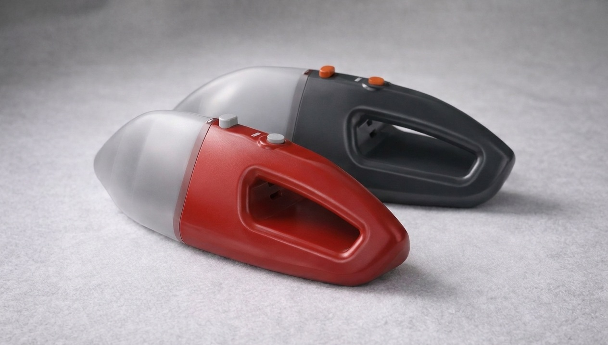
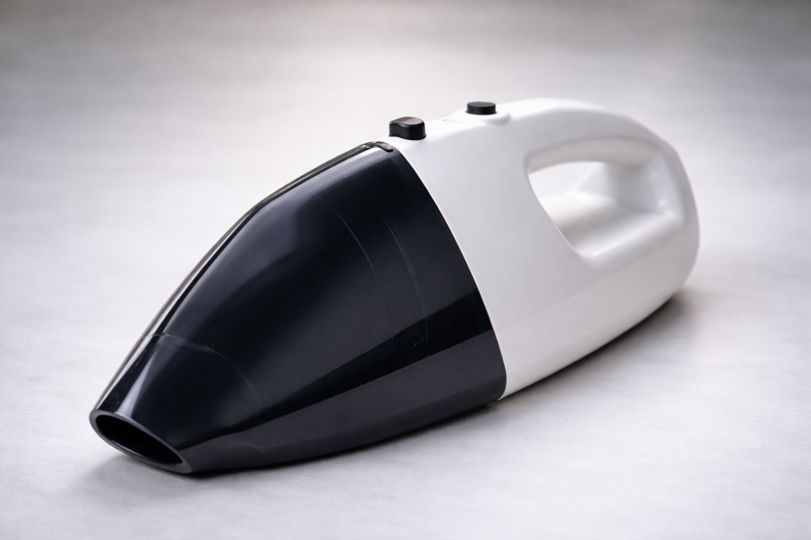
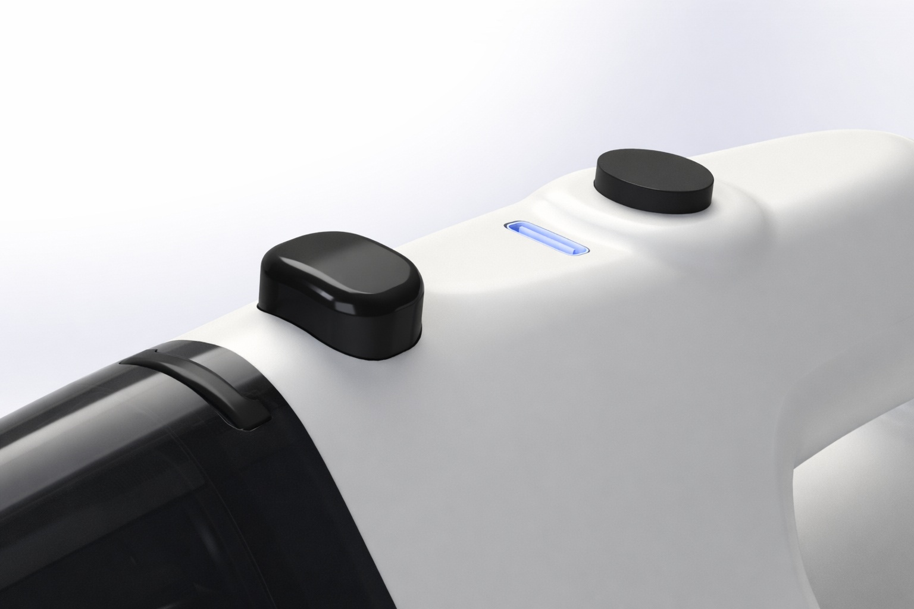
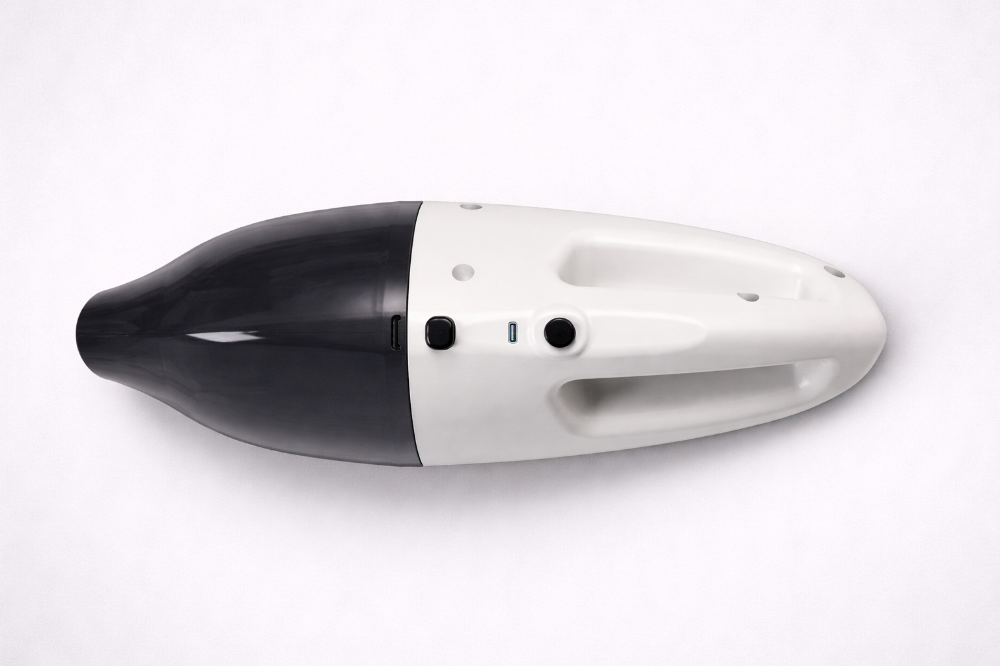
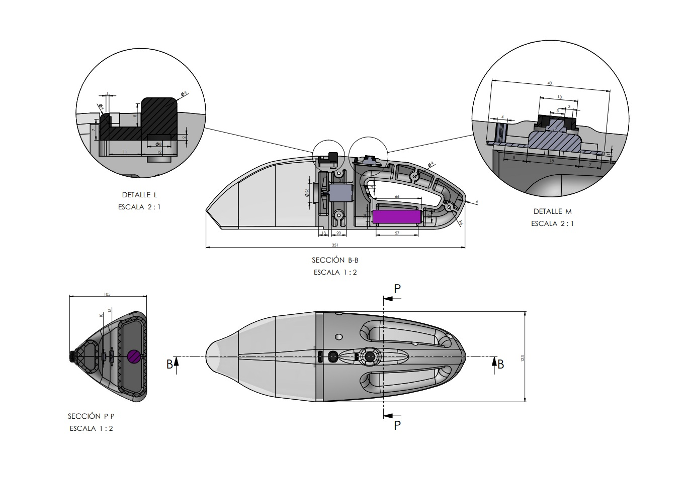

Proyecto Alpha

El Análisis
El Proyecto Alpha trasciende la mera concepción formal para abordar la compleja relación entre el volumen interno y la eficiencia estructural.



La planimetría técnica resultante representa un mapa crítico para la fabricación a gran escala. Cada línea y tolerancia definida es fruto de un estudio profundo.
